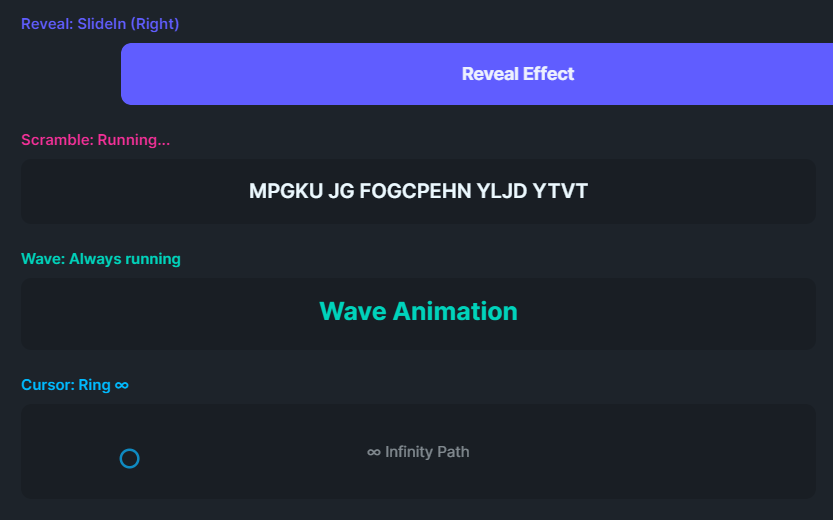

A collection of pluggable visual effects for Uno Platform controls (namespace: Flowery.Effects), designed for cross-platform compatibility including Browser/WASM.

Add the namespace to your XAML:
xmlns:fx="using:Flowery.Effects"Entrance animation when element enters the visual tree. Supports 5 modes:
FadeReveal (default): Fades in while sliding into position.<Border fx:RevealBehavior.IsEnabled="True"
fx:RevealBehavior.Duration="0:0:0.6"
fx:RevealBehavior.Direction="Bottom"
fx:RevealBehavior.Distance="50">
<TextBlock Text="I fade in from below!"/>
</Border><Border fx:RevealBehavior.Mode="SlideIn" .../><Border fx:RevealBehavior.Mode="FadeOnly" fx:RevealBehavior.Duration="0:0:0.8"/><Border fx:RevealBehavior.Mode="Scale" fx:RevealBehavior.Duration="0:0:0.5"/><Border fx:RevealBehavior.Mode="ScaleSlide"
fx:RevealBehavior.Direction="Bottom"
fx:RevealBehavior.Distance="60"/>| Property | Type | Default | Description |
|---|---|---|---|
IsEnabled |
bool | false | Enable the effect |
Mode |
RevealMode | FadeReveal | FadeReveal, SlideIn, FadeOnly, Scale, ScaleSlide |
Duration |
TimeSpan | 500ms | Animation duration |
Direction |
RevealDirection | Bottom | Origin direction (Top/Bottom/Left/Right) |
Distance |
double | 30 | Slide distance in pixels (for translate modes) |
Easing |
Easing | QuadraticEaseOut | Easing function |
Text scramble/reveal effect on hover or click (mobile-friendly).
RevealOnHover (default): Text starts scrambled and progressively reveals on hover/click. Ideal for teasers, spoilers, or hidden content.<TextBlock Text="Secret Message"
fx:ScrambleHoverBehavior.IsEnabled="True"/><TextBlock Text="Glitch Me!"
fx:ScrambleHoverBehavior.IsEnabled="True"
fx:ScrambleHoverBehavior.Mode="ScrambleOnHover"/><TextBlock Text="DEPARTURES"
fx:ScrambleHoverBehavior.IsEnabled="True"
fx:ScrambleHoverBehavior.RevealStyle="SplitFlap"
fx:ScrambleHoverBehavior.Duration="0:0:2.5"/>| Property | Type | Default | Description |
|---|---|---|---|
IsEnabled |
bool | false | Enable the effect |
Mode |
ScrambleMode | RevealOnHover | RevealOnHover (start scrambled) or ScrambleOnHover (start readable) |
RevealStyle |
RevealStyle | Random | Random (random chars) or SplitFlap (alphabetical cycling like airport boards) |
ScrambleChars |
string | !@#$%^&*()[]{}... |
Characters used for Random style |
Duration |
TimeSpan | 500ms | Time to fully resolve/scramble text |
FrameRate |
int | 30 | Updates per second |
Infinite sine wave animation on the Y axis. Supports both whole-block and per-character modes.
<!-- Per-character ripple wave (SmoothUI style) -->
<TextBlock Text="Ripple!"
fx:WaveTextBehavior.IsEnabled="True"
fx:WaveTextBehavior.IsPerCharacter="True"
fx:WaveTextBehavior.Amplitude="8"
fx:WaveTextBehavior.StaggerDelay="0:0:0.05"/>
<!-- Simple whole-block wave -->
<TextBlock Text="Wave!"
fx:WaveTextBehavior.IsEnabled="True"
fx:WaveTextBehavior.Amplitude="5"/>| Property | Type | Default | Description |
|---|---|---|---|
IsEnabled |
bool | false | Enable the effect |
IsPerCharacter |
bool | false | Enable character-level ripple wave (replaces Text with Inlines) |
Amplitude |
double | 5 | Maximum vertical movement (pixels) |
Duration |
TimeSpan | 1000ms | Wave cycle duration |
StaggerDelay |
TimeSpan | 50ms | Delay between characters (only for IsPerCharacter) |
Creates a follower element that tracks mouse position with spring physics.
<Grid Background="Transparent"
fx:CursorFollowBehavior.IsEnabled="True"
fx:CursorFollowBehavior.FollowerSize="20"
fx:CursorFollowBehavior.FollowerShape="Circle"
fx:CursorFollowBehavior.FollowerOpacity="0.75"
fx:CursorFollowBehavior.FollowerBrush="{ThemeResource DaisyPrimaryBrush}"/>| Property | Type | Default | Description |
|---|---|---|---|
IsEnabled |
bool | false | Enable the effect |
FollowerSize |
double | 20 | Size of follower element |
FollowerShape |
FollowerShape | Circle | Circle, Square, or Ring |
FollowerOpacity |
double | 1.0 | Opacity (0.0 - 1.0) |
FollowerBrush |
Brush | DodgerBlue | Fill/stroke brush |
Stiffness |
double | 0.15 | Spring stiffness (0-1) |
Damping |
double | 0.85 | Velocity damping (0-1) |
Grid, Canvas, StackPanel).
Desktop only: This effect is designed for mouse/cursor tracking and is hidden on Android/mobile where touch gestures scroll the page instead.
Container hit testing: If you want tracking to work across a container's full area (not just over child elements), the Panel must have Background="Transparent" (or any brush). Without a background, pointer events are only detected over rendered content.
<!-- ✅ Correct: Panel receives mouse events everywhere -->
<Grid Background="Transparent" fx:CursorFollowBehavior.IsEnabled="True">
<TextBlock Text="Content"/>
</Grid>
<!-- ❌ Wrong: Mouse events only fire over the TextBlock -->
<Grid fx:CursorFollowBehavior.IsEnabled="True">
<TextBlock Text="Content"/>
</Grid>Sequential character reveal animation for TextBlock controls. Ideal for terminal simulations, loading messages, or storytelling UI.
<TextBlock Text="System initialized... Ready."
fx:TypewriterBehavior.IsEnabled="True"
fx:TypewriterBehavior.Speed="0:0:0.05"/>| Property | Type | Default | Description |
|---|---|---|---|
IsEnabled |
bool | false | Enable the effect |
Speed |
TimeSpan | 50ms | Delay between each character |
Automatically re-triggers entrance animations when an element enters the scroll viewport. Works in conjunction with RevealBehavior.
<ScrollViewer>
<StackPanel>
<Border fx:RevealBehavior.IsEnabled="True"
fx:ScrollRevealBehavior.IsEnabled="True">
<TextBlock Text="I reveal when you scroll to me!"/>
</Border>
</StackPanel>
</ScrollViewer>| Property | Type | Default | Description |
|---|---|---|---|
IsEnabled |
bool | false | Enable viewport-aware reveal |
All effects can be applied or modified at runtime using static helper methods:
using Flowery.Effects;
// Apply RevealBehavior to any UIElement
RevealBehavior.SetIsEnabled(myBorder, true);
RevealBehavior.SetDuration(myBorder, TimeSpan.FromMilliseconds(800));
RevealBehavior.SetDirection(myBorder, RevealDirection.Left);
// Manually trigger a reveal animation
RevealBehavior.TriggerReveal(myBorder);
// Apply Typewriter effect programmatically
TypewriterBehavior.SetIsEnabled(myTextBlock, true);
TypewriterBehavior.SetSpeed(myTextBlock, TimeSpan.FromMilliseconds(30));
// Apply ScrollReveal behavior
ScrollRevealBehavior.SetIsEnabled(myElement, true);
// Apply ScrambleHover to a TextBlock (default: RevealOnHover)
ScrambleHoverBehavior.SetIsEnabled(myTextBlock, true);
ScrambleHoverBehavior.SetScrambleChars(myTextBlock, "█▓▒░");
// Use ScrambleOnHover mode for decorative glitch effect
ScrambleHoverBehavior.SetMode(myTextBlock, ScrambleMode.ScrambleOnHover);
// Use SplitFlap style for airport departure board effect
ScrambleHoverBehavior.SetRevealStyle(myTextBlock, RevealStyle.SplitFlap);
// Trigger animation programmatically (for demos)
ScrambleHoverBehavior.TriggerScramble(myTextBlock);
// Apply WaveText to a TextBlock
WaveTextBehavior.SetIsEnabled(myTextBlock, true);
WaveTextBehavior.SetAmplitude(myTextBlock, 10);
// Apply CursorFollow to a Panel
CursorFollowBehavior.SetIsEnabled(myGrid, true);
CursorFollowBehavior.SetFollowerBrush(myGrid, new SolidColorBrush(Colors.Red));
CursorFollowBehavior.SetFollowerShape(myGrid, FollowerShape.Ring);
// Programmatically control cursor follower (for demos/automation)
CursorFollowBehavior.ShowFollower(myGrid);
CursorFollowBehavior.SetTargetPosition(myGrid, 100, 50); // Set target x,y
CursorFollowBehavior.HideFollower(myGrid);// Animate cursor follower in a figure-8 pattern
private async Task AnimateInfinityPath(Grid panel, CancellationToken ct)
{
double t = 0;
while (!ct.IsCancellationRequested)
{
var w = panel.ActualWidth;
var h = panel.ActualHeight;
// Lemniscate of Bernoulli
var sinT = Math.Sin(t);
var cosT = Math.Cos(t);
var denom = 1 + sinT * sinT;
var x = (cosT / denom) * w / 3 + w / 2;
var y = (sinT * cosT / denom) * h / 2 + h / 2;
CursorFollowBehavior.SetTargetPosition(panel, x, y);
t += 0.03;
await Task.Delay(16, ct);
}
}Core utility for cross-platform compatible animations. Use this for custom effects:
using Flowery.Effects;
// Animate a single value
await AnimationHelper.AnimateAsync(
value => element.Opacity = value,
from: 0.0,
to: 1.0,
duration: TimeSpan.FromMilliseconds(500),
easing: new CubicEaseOut());
// Animate with progress callback (t = 0 to 1, eased)
await AnimationHelper.AnimateAsync(
t =>
{
element.Opacity = t;
transform.X = AnimationHelper.Lerp(startX, endX, t);
},
duration: TimeSpan.FromMilliseconds(500),
easing: new CubicEaseInOut());All effects use manual Task.Delay + DispatcherQueue interpolation instead of declarative animation keyframes. This pattern ensures consistent behavior across:
// Manual interpolation pattern (used by Flowery.Effects)
for (int i = 0; i <= steps; i++)
{
var t = easing.Ease((double)i / steps);
DispatcherQueue.GetForCurrentThread().TryEnqueue(() => ApplyValue(t));
if (i < steps) await Task.Delay(stepDuration, ct);
}This library is inspired by smoothui by Eduardo López, a React/Tailwind/Framer Motion component library.
smoothui is licensed under the MIT License.